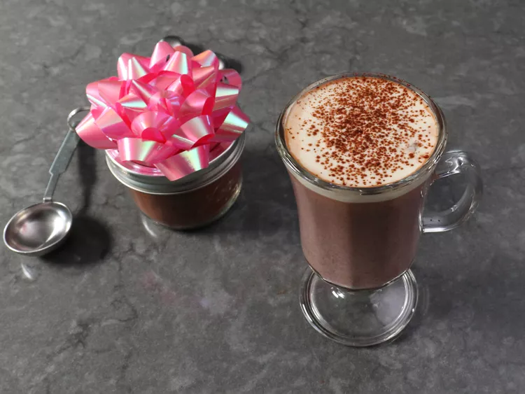

This instant gingerbread hot chocolate puts a seasonal twist on everybody's favorite hot cold weather drink. With gingerbread spices and a hint of molasses flavor from brown sugar, it is mixed and ready to add to hot milk. Plus, it makes an edible gift so special that the person you give it to won't care how easy it was for you to make it.
I generally don’t like to mess around with the classics — and if there’s an iconic hot drink that doesn’t need to be messed around with it’s hot chocolate. But this simple seasonal twist really was incredible. That’s coming from someone who doesn’t like pumpkin spiced anything, but there’s just something special about the way the ginger and cinnamon compliment the cocoa that makes this an absolutely perfect cold weather drink.
Plus, I can’t think of an easier, more perfect edible gift. Just mix it up, transfer it into an appropriate container, slap on a bow, and you’re good to go. As I joked about in the video, this stuff is so good that no one will care how little time, effort, and money you spent on them. But, whether you make this for yourself, or someone on your gift list, or both, I really do hope you give this a try soon. Enjoy!
Step 1
Add cocoa, white sugar, brown sugar, ginger, cinnamon, cloves, salt, and cayenne to a bowl, and whisk thoroughly to combine.
Step 2
Store in an airtight container until needed. Be sure to stir very thoroughly before each use.
Step 3
To make hot chocolate, heat milk over medium heat until it almost starts to simmer. Whisk in 2 tablespoons of instant gingerbread hot chocolate mix per 1 cup milk.
Step 4
Gradually whOnce everything is mixed together and dissolved, and the milk is piping hot, transfer into mugs and enjoy.